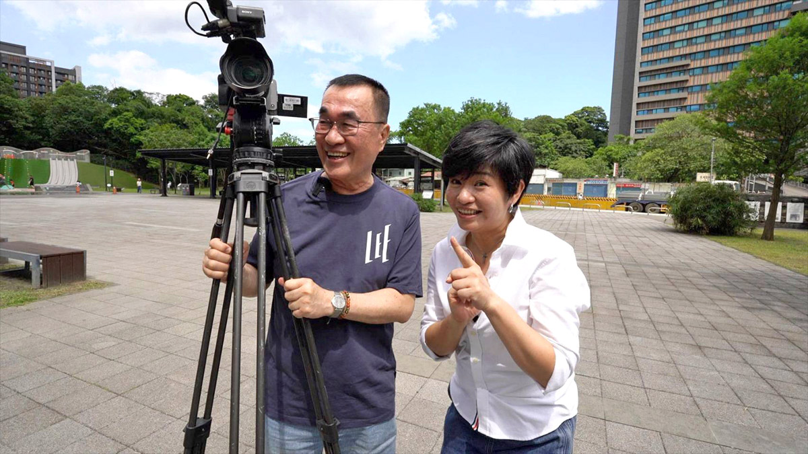
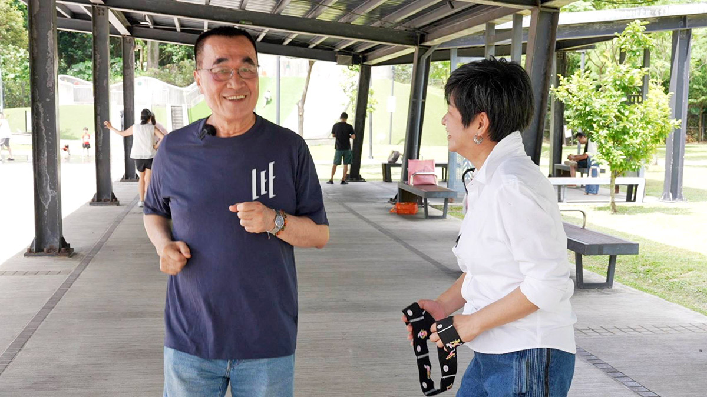
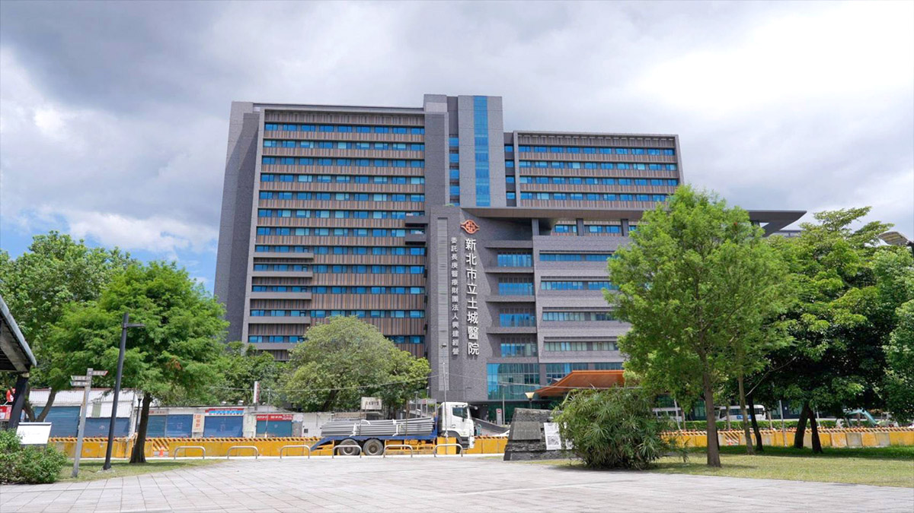
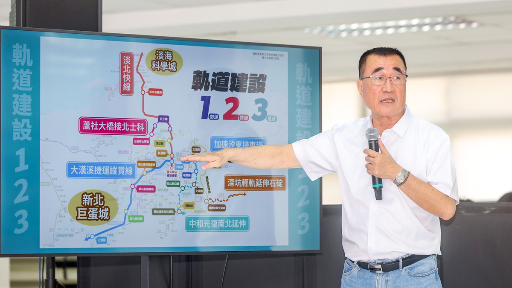

他的城市考題
李四川
會維修城市的人，能想像「城市」嗎？
◎ 報導／呂佳頴
◎ 攝影／柯勝雄
◎ 部分圖片／取自李四川FB
他的城市考題
◎ 報導／呂佳頴
◎ 攝影／柯勝雄
◎ 部分圖片／取自李四川FB
2026年8月
土城醫院對面的斬龍山遺址文化公園
什麼樣的建築物最複雜、最難蓋？你猜答案是摩天高樓、巨蛋、還是火車站？沒想到李四川回答：「醫院最複雜。」做了一輩子工程，看過無數施工藍圖的他，答案竟然不是最高、最大、最會被看見的建築，而是醫院。
因為醫院不是一間房子，裡面有內科、外科、急診、病房，每一個空間彼此相扣。管線怎麼走，動線怎麼安排，只要動了一處，可能就牽動整個系統，一旦感染擴散，後果不敢想像。聽到這裡，我沒有繼續追問，因為我開始懷疑，他回答的不是醫院。他回答的，是城市。

▲ 李四川幫忙記者扛起腳架，還先掂了掂重量，笑說自己是「做工的人」。（圖／柯勝雄攝）
那天，我們約在土城醫院對面的「斬龍山遺址文化公園」。現在回頭想，地點選得很巧。一邊是李四川口中最複雜的建築，一邊是我重新認識他的地方。
天空正飄著烏雲。我說：「快點，好像要下雨了。」他抬頭看了一眼，笑著說：「不會，因為我們要錄影。」雖不能說他超級樂觀，但也發現，他第一個想到的通常不是困難。
我拿起腳架，他說：「我來吧！」叫一個當過新北、高雄、台北副市長的人幫我拿腳架，我怎麼敢？趕緊說不用。他看著腳架，突然問：「這有以前當兵的步槍重嗎？」這題太難，我沒當過兵，只好把腳架遞給他，他接過去，像是真的在掂重量。「步槍差不多4.7公斤，這個比較重。」
我想把腳架接回來，他搖頭：「我拿就好。」還補了一句：「我是做工的人。」這話短到不像政治人物的自我介紹，但比很多長篇大論準確，讓人感受到「拿榔頭的李四川」不只是形象，而是真實和貼切。

▲ 李四川的運動習慣是超慢跑，他覺得常運動能保持健康，還能減輕健保負擔，是一舉兩得的事。（圖／柯勝雄攝）
做工的人會相信什麼事？李四川打開手機裡的節拍器，開始超慢跑；我拿出彈力帶，說最近有空就拉一下。他一臉狐疑，像在說這東西能幹嘛？他問：「你一次拉多久？」我回答：「一、兩分鐘。」他聽完，把彈力帶默默還我，雖然沒說「小姐，這也算運動？」但表情很誠實。
我接著問：超慢跑和彈力帶會選哪一個？他沒有猶豫說：「超慢跑。」選它的理由是不用器材、不用場地，打開手機就可以做。
工程師相信的不是奇蹟，是每天行動；一座城市恐怕也是這樣，不是靠喊一次大願景，就突然變好。是每天補一個洞、接一條路、蓋一間醫院，最終能把一件卡住很久的事，慢慢推到可以動。

▲ 2020年啟用的土城醫院，是李四川一戶一戶去拜託「遷墳」才蓋成的。（圖／柯勝雄攝）
李四川繼續超慢跑，跑著跑著，一轉頭，就是土城醫院。他指著醫院說：「那裡以前都是墳墓。」當年為了蓋土城醫院，他一家一家拜訪，溝通遷墳。最後遷了兩千兩百多座墳，也撿拾將近三萬支骨頭。很多人覺得，那不是工程，那是禁忌。有人怕沖犯，有人怕怪事，他反而很平靜。
「蓋醫院是讓大家不用跑那麼遠看病。」、「祖先會保佑。」這些話不是李四川先想到的，而是一路陪著他挨家挨戶溝通的震安宮主委當年對他說的。講到這裡，他停了一下。「很可惜，主委過世了。」後來聊著聊著，他又提了一次主委。
我沒有打斷，只是默默記下來。因為一個人如果只是順口提起，不會在短短幾分鐘裡，重複兩次。那一刻，醫院不只是醫院，工程也不只是工程。他記得的不是只有管線、圖面、工期、動線。他還記得，是誰陪他把醫院蓋起來的。
這是李四川身上比較不容易被看見的地方。大家說他會做事，但會做事，不只是會把混凝土灌下去，還要有人願意跟你談，願意信你，願意陪你一戶一戶走過去。

▲ 李四川「軌道建設123」交通政策，其中「大漢溪捷運縱貫線」近期多次成為他公開說明的重點。（圖/取自李四川FB）
後來聊到未來的新北，幕僚把圖卡遞過來。他很少低頭看，反而伸出手，在空中比劃著：「這條接過去」、「那座橋連這裡」、「醫院放這邊」、「科技園區會往這裡延伸。」原來那張圖不是拿來提醒他的，是拿來提醒我們的，因為整張建設圖早在他腦子裡。
我問：「醫院的地都找好了嗎？」他回答得很快，「盤過了。」那一刻，李四川不像候選人。比較像一位正在開工前，做最後確認的工地主任。他前面說醫院，後面講交通、產業、住宅，其實都是同一件事。
在他的世界裡，城市不是一塊一塊蓋起來的。城市是一個系統，這是他的強項。李四川知道哪裡漏水、哪裡卡住、哪裡要補、哪裡要接、哪裡不能只看眼前，因為一動，就會牽到別處。只是，新北不只是一張施工圖。施工圖可以畫好、工期可以排好、預算可以估好。因為人不會完全照圖走，城市也不會。
▲ 李四川有40餘年公職與工程資歷，自認是「做成事的人」。（圖／取自李四川FB）
這一次，他要蓋的不是醫院，也不是道路。而是一場選舉。他笑了一下：「坐轎比抬轎累。」以前，他站在後面，把工程做好；現在，他站到最前面。
攻擊隨之而來。有人把他的照片P成黑道、有人翻出十年前買房的事情。他說，該說明的會說明。說完後，又補了一句：「比較不好意思的是，害鄰居一直被拍。」被攻擊的人是他，但他先想到的是鄰居。他說，太太曾經問他：「會不會後悔？」他笑著回答：「不會。如果大家不要，我就陪妳遊山玩水。」
說完，他停了一下。看著我說：「有事衝我來。」這句話別人講，可能像選舉台詞。但放在李四川身上，比較像一個做工的人把東西扛到肩上。以前扛工程，現在扛選舉。如果新北要交給他，這就是他的優勢。他會做、會修、會補，會把散掉的系統重新接起來，但這也是李四川的考題。
新北不是一間壞掉的房子。新北太大、太複雜，有太多不同的生活圈，也有太多每天通勤、就醫、工作、養小孩，等著城市不要再卡住的人。會修城市很重要。可是市長不能只修城市。還要說得出，修好之後，城市要往哪裡去？
離開前，我想起一開始的問題。什麼建築最難蓋？原本以為，答案是醫院，後來才知道，真正難的不是鋼筋，也不是混凝土，而是人們的信任。信任這件事，當年，是為了蓋一間醫院；現在，則是一場選舉。
李四川很適合被現場考。因為圖不在紙上，圖在他腦子裡；在他願意拿起來的腳架裡；在他記得的主委裡；也在那句「有事衝我來」裡。只是新北最後要問的，恐怕還不只這句。而是有事衝你來之後，你要把這座城市帶去哪裡？

跑遍新北的人，能不能把腳印走成方向？

擅長管理複雜系統的人，能讓快速長大的桃園產生共同方向嗎？

熟悉制度的法律人，能找回「消失的4分鐘」嗎？

看懂產業布局的人，能不能看見每一種人的生活？

地方跑得久的人，能不能跑出城市方向？

給答案可以很快，城市治理什麼都能馬上辦嗎？

從競爭中突圍的人，能不能讓不同地方、派系與世代重新走在一起？

直率的真實，能轉換成市民的治理信任嗎？

一路把每一棒跑好的人，能不能跑出自己的路線？

習慣把答案整理清楚的人，能面對沒有標準答案的台北嗎？

看見缺口的人，能從台北的各種「可是」裡找到方向嗎？
新聞部
副總經理 王結玲
議題研究中心／呂佳頴
採訪中心攝影組／柯勝雄
網路新聞中心／楊致中・談雍雍・吳家瑜
數位事業部
內容策展組／廖玉貞・彭嘉儀・林佳瑤・李佳綺
© TVBS Media Inc. All Rights Reserved.｜聯利媒體股份有限公司